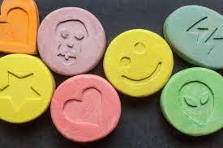

La MDMA, usualmente conocida como éxtasis, es una droga empatógena perteneciente a la familia de las anfetaminas sustituidas. Las rutas más comunes para su síntesis emplean la 3,4-metilenodioxifenil-2-propanona como precursor.
La MDMA actúa aumentando la actividad de tres sustancias químicas en el cerebro: la dopamina, la norepinefrina y la serotonina. Los efectos incluyen mayor nivel de energía, percepción distorsionada, rechinado involuntario de los dientes, temperatura corporal elevada a niveles peligrosos y depresión.
La cocaína o benzoilmetilecgonina según la denominación común internacional, también conocida simplemente como coca, es un alcaloide tropano y fuerte estimulante utilizado sobre todo como droga recreativa.
Los efectos fisiológicos a corto plazo que resultan del consumo de cocaína incluyen contracción de los vasos sanguíneos, dilatación de las pupilas y aumentos en la temperatura corporal, la frecuencia cardiaca y la presión arterial.
La marihuana es una mezcla verde, marrón o gris de partes desmenuzadas y secas de la planta de marihuana. La planta contiene sustancias químicas que actúan en el cerebro y pueden cambiar su estado de ánimo o conciencia
La heroína es una droga opiácea (derivada del opio) elaborada a partir de la morfina, una sustancia natural que se extrae de la vaina de semillas de varias plantas de amapola (adormidera) que se cultivan en el sudeste y sudoeste de Asia, en México y en Colombia.
En el caso de la heroína, la oleada de euforia a menudo está acompañada por un enrojecimiento cálido de la piel, sequedad bucal y una sensación de pesadez en las extremidades. También se pueden presentar náuseas, vómitos y picazón intensa.